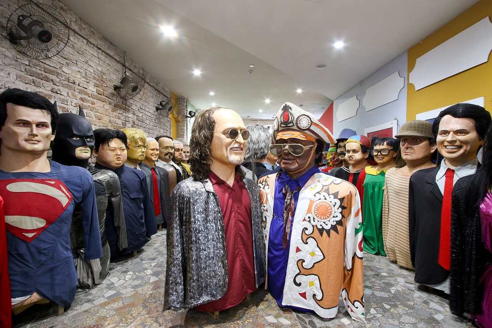

Paço do Frevo
Instalado no Bairro do Recife, o Paço do Frevo é um Centro de Referência em Salvaguarda do Frevo dedicado à difusão, pesquisa, lazer e formação nas áreas da dança e música do frevo. Seu objetivo é proteger, divulgar e propagar a prática do frevo para as futuras gerações e ser uma espaço de promoção e celebração da cultura carnavalesca e do frevo durante o ano todo. Desde 2014, o Paço desenvolve exposições, atividades, pesquisas e eventos para a divulgação e proteção desse Patrimônio Imaterial da Humanidade, que deve ser reverenciado todos os dias. O Paço do Frevo é um centro cultural de referência que desenvolve ações, projetos e atividades visando a valorização, documentação, proteção, transmissão e salvaguarda do Frevo, o ritmo / dança musical que é um dos principais ícones da identidade pernambucana, tendo sido reconhecido por o Instituto do Patrimônio Histórico e Artístico Nacional (IPHAN) como patrimônio cultural e imaterial brasileiro em 2007 e pela UNESCO como Patrimônio Imaterial da Humanidade em 2012.

Clique aqui para saber mais.
Embaixada dos Bonecos Gigantes
Os Bonecos Gigantes surgem na Europa, provavelmente na Idade Média, sob a influência dos mitos pagãos escondidos pelos temores da Inquisição. Chegam em Pernambuco através da pequena cidade de Belém do São Francisco no sertão do estado. Os bonecos surgiram da vontade de um jovem sonhador que ouvia atento as narrativas de um padre belga sobre o uso de bonecos nas festas religiosas da Europa. O primeiro boneco foi às ruas da pequena cidade durante o carnaval de 1919 com o surgimento do personagem Zé Pereira, confeccionado em corpo de madeira e cabeça em papel machê, somente no ano de 1929 resolveram criar sua companheira, boneca esta batizada com o nome de Vitalina. A tradição dos bonecos gigantes, iniciada em Belém do São Francisco, ganhou as ladeiras de Olinda em 1932, com a criação do boneco do Homem da Meia Noite, confeccionado pelas mãos dos artistas plásticos Anacleto e Bernardino da Silva, em 1937 surgiu a Mulher do Meio Dia, em 1974 foi à vez do Menino da Tarde pelas mãos do artista plástico Silvio Botelho Botelho, que popularizou a tradição com criação do Encontro dos Bonecos Gigantes, onde vários bonecos de diversos artistas se encontram para um grande desfile pelo sitio histórico de Olinda na terça de carnaval.
Clique aqui para saber mais.